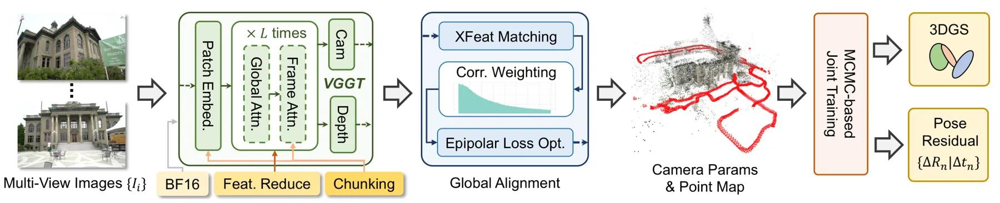
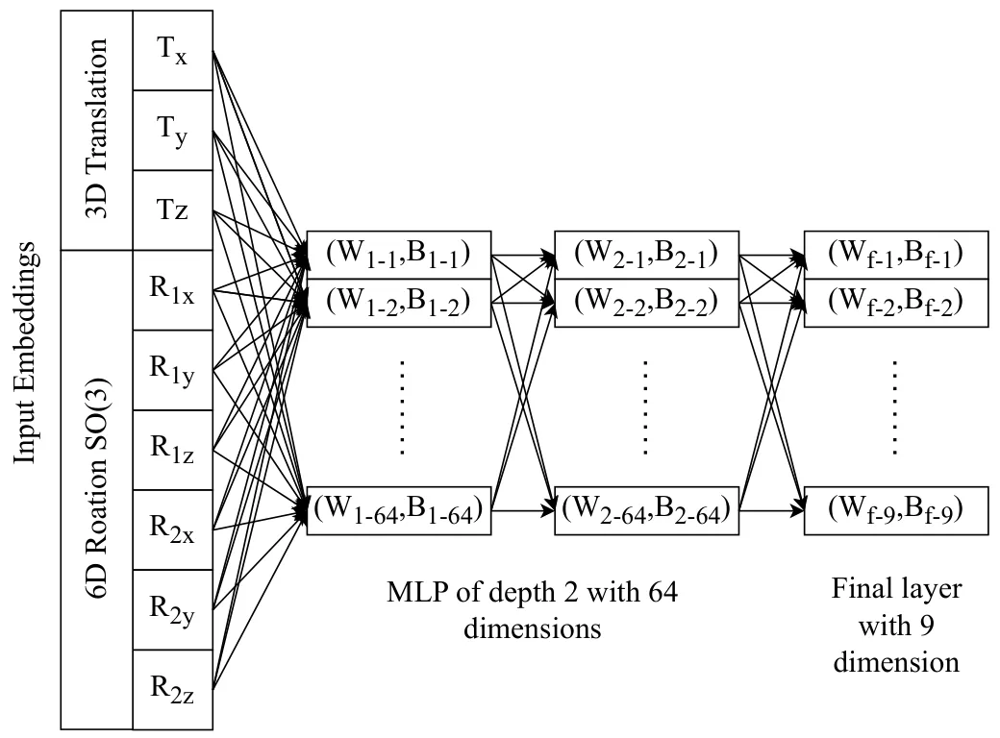
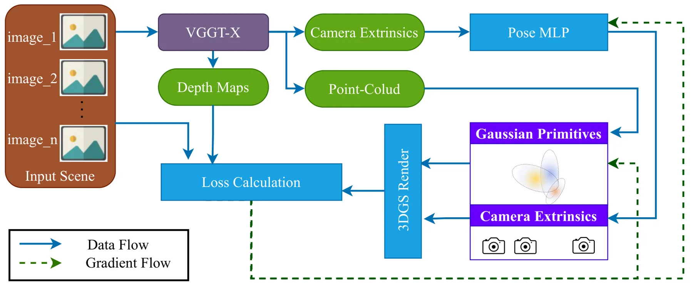
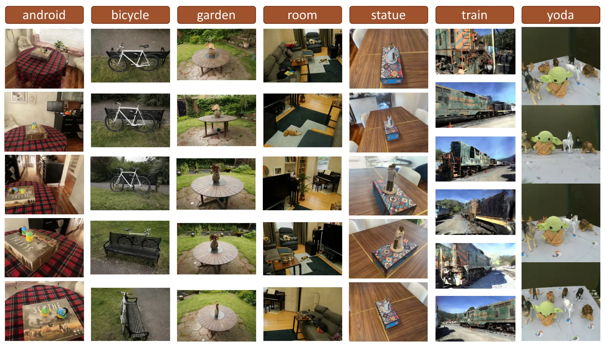
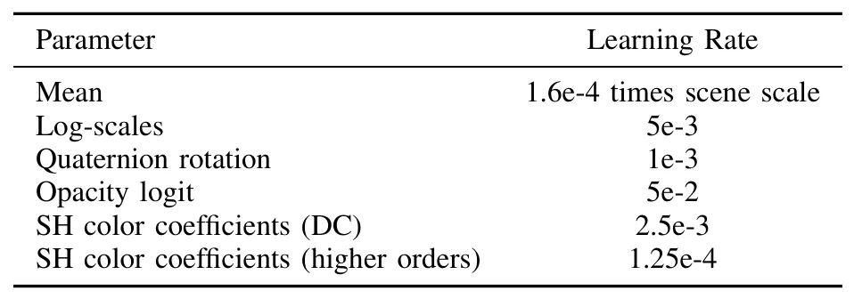
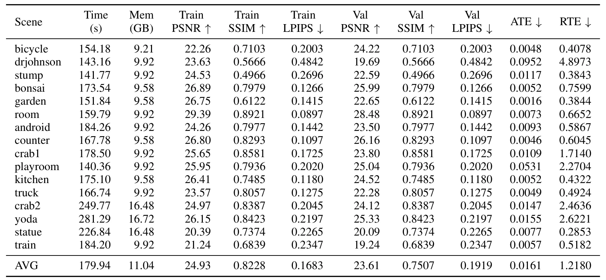
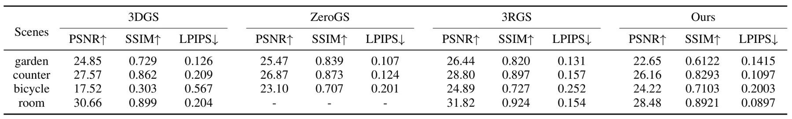
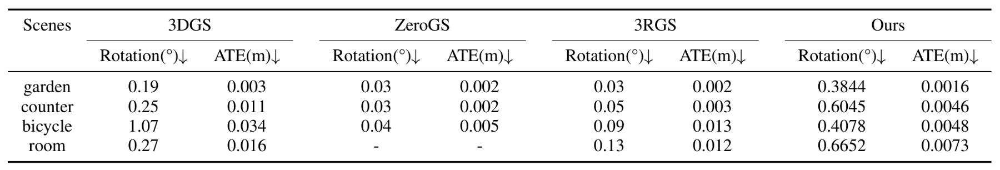
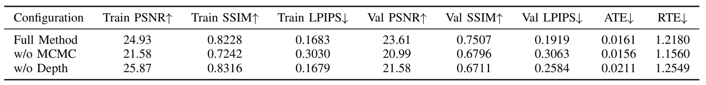

基于 3D 基础模型初始化的快速高斯泼溅重建Fast 3D Foundation Model Initialized Gaussian Splatting
直接命中快速 3DGS、位姿/点云初始化和机器人近实时重建；有明确指标和应用场景，但需要进一步验证 foundation model 依赖与粗位姿退化。
一句话工作总结
用 3D foundation model 替代 COLMAP/SfM 初始化，把 3DGS 快速推向近实时可用重建。
摘要
本文提出一种无需传统 SfM 的快速高质量 3D Gaussian Splatting 重建方法：利用 3D 基础模型提供相机位姿和点云初始化，再通过深度引导损失联合优化相机位姿与 Gaussian primitives，并加入 MLP 位姿细化以改善稀疏视图场景。实验显示该方法在 Mip-NeRF 360、Tanks and Temples 和 RobustNeRF 上达到有竞争力的重建质量，同时把每个场景训练时间降到约 3 分钟。
This paper introduces a fast method for high-quality 3D Gaussian Splatting (3DGS) reconstruction without traditional Structure-from-Motion (SfM). The proposed approach leverages 3D Foundation Models (3DFMs) for camera pose and point-cloud initialization, then jointly optimizes both camera poses and Gaussian primitives using a depth-guided loss function. This enables fast convergence even from rough initialization with as few as 50-60 input views. To further improve reconstruction quality in sparse-view scenarios, an MLP-based pose refinement module is introduced alongside depth-guided supervision from the foundation model. Extensive experiments on Mip-NeRF 360, Tanks and Temples, and RobustNeRF demonstrate that the proposed method achieves competitive reconstruction quality (23.61 dB PSNR, 0.19 LPIPS) while reducing training time to approximately three minutes per scene. The proposed method produces ready-to-use 3DGS models at a fraction of the time required by existing pipelines, making it suitable for near real-time applications in robotics, VR, and autonomous navigation.
中文解读摘录
- 链接：https://arxiv.org/abs/2607.03209 ｜ PDF：https://arxiv.org/pdf/2607.03209
- 中文题名：基于 3D 基础模型初始化的快速高斯泼溅重建
- 关键信息：用 3D Foundation Model 替代传统 SfM 初始化，提供相机位姿与点云初值，再联合优化相机和 Gaussian primitives，并加入深度引导损失与 MLP 位姿细化。
- 为什么值得看：目标是把可用 3DGS 模型训练到约 3 分钟/场景，并在 50–60 张输入视图下保持质量；对机器人、VR、自动导航里的快速建图/场景资产生成很直接。
- 需要核查：foundation model 依赖、初始化误差范围、与 COLMAP 初始化 3DGS 的公平训练时间对比，以及粗位姿条件下是否会出现尺度/姿态退化。
图表/页面预览

{kind=link}

{kind=link}

{kind=link}

{kind=link}

{kind=link}

{kind=link}

{kind=link}

{kind=link}

{kind=link}
